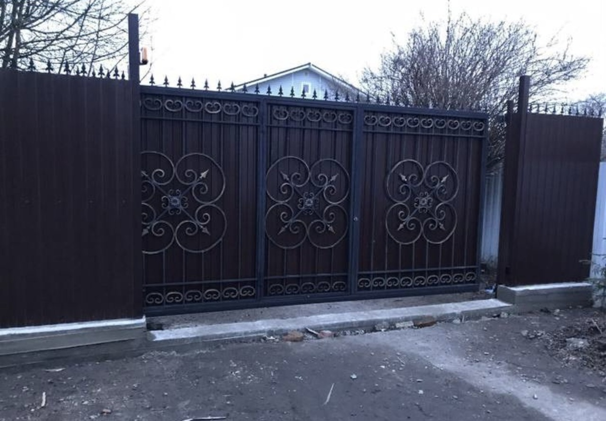
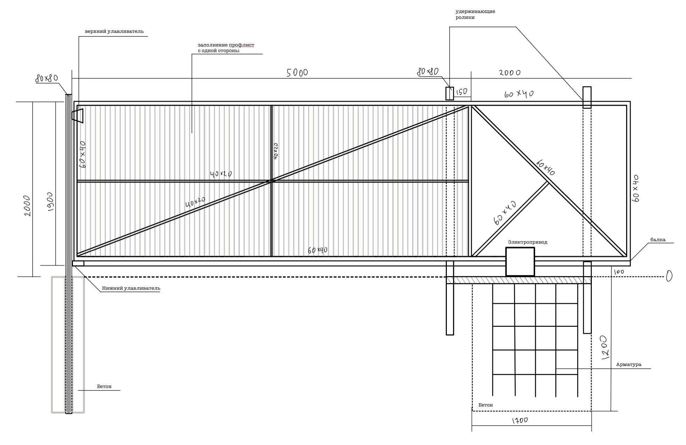

Ворота на свайном фундаменте без автоматики, монтаж за 1 день
Ворота и калитка на бетонном фундаменте с обшивкой профлистом, автоматикой и датчиками, монтаж за 2 дня: 1 день монтаж бетонного фундамента с армированием и закладным швеллером; 2 день монтаж и обшивка ворот, с монтажом автоматики, датчиков, пуско-наладочные работы и настройка
Ворота на бетонном фундаменте с автоматикой и датчиками, обшивкой евроштакетником с 2 сторон
Ворота и калитка с обшивкой деревом в горизонтальном положении на готовый фундамент и каменные столбы монтаж и обшивка за 1 день
Откатные Ворота с калиткой внутри на бетонном фундаменте с автоматикой, обшивка евроштакетником в 2 цветном варианте, обшиты штакетником изнутри в цвет каркаса
Откатные Ворота, на свайном фундаменте проем 5 метров, с обшивкой 2 х сторонним профлистом с 1 стороны

Откатные кованные Ворота с забором на бетонной ленте, обшивка профлистом, автоматика BFT с датчиками безопасности

Сначала мы выезжаем на замеры и заключение договора, если заключили договор, то выезд входит в стоимость договора, либо бесплатный выезд в день попутных работ.
Если бетонный фундамент, то через 2-3 дня приезжаем и заливаем его. В течение 7 дней приезжаем и ставим Ворота. 2 оплаты: первая после фундамента, остальное в день монтажа ворот.
Если на сваях, то через дней 7 приезжаем и ставим Ворота за 1 день.
Изготовление ворот происходит в оборудованном цеху на профессиональном оборудовании, порошковая покраска, на профессиональных
комплектующих “алютех”.
Мы поможем вам спрятать вашу территорию от лишних глаз и защитить от незваных гостей. Мы ставим заборы в СПб и Лен. области уже не первый год: знаем как правильно работать с почвой и делать долгоживущие заборы. Ждем Ваших звонков!